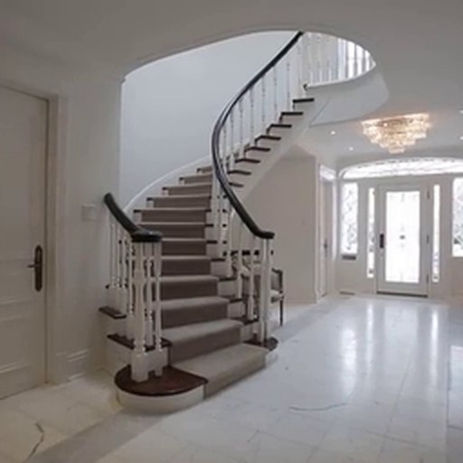
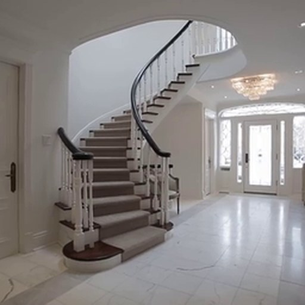

PAIRWISE TRAINING
Separate what stays shared from what remains visual.
The same frame pair reaches the video and geometry-semantic branches. All three branches reconstruct the future.


SHARED PHYSICAL
DFoT + PAGE-4DShared RVQQ
Geometry anchors a common discrete transition vocabulary.
PRIVATE APPEARANCE
DFoT + DINOv2Continuous encoderA
Texture, illumination, and semantic detail bypass quantization.
ADDITIVE COUPLING
QA
UVisual futureGeometry future reads Q onlyFROZEN SIGNALS DURING TRAINING
PAGE-4D provides geometry features and point maps that anchor the shared physical vocabulary.